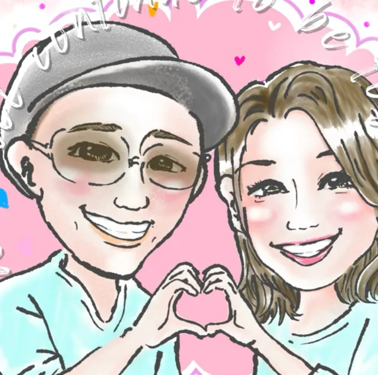
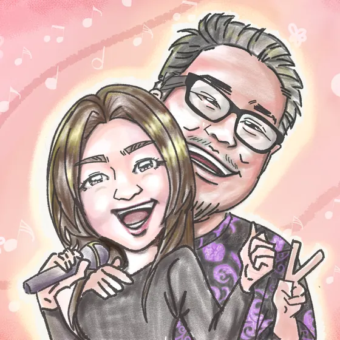
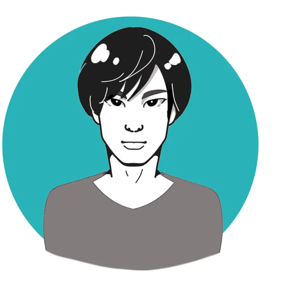
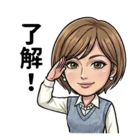
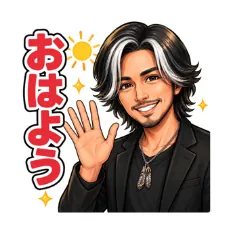
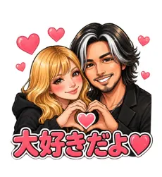
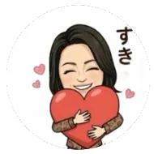

WORKS
これまでの制作
手描き動画・似顔絵・LINEスタンプの作品をご紹介します。
WORKS
これまでの制作
手描き動画 想いをストーリーにして届けます

近日公開
近日公開
近日公開
似顔絵 記念日・プレゼント・SNSアイコンに








LINEスタンプ 毎日のやりとりに、自分だけのスタンプを









動くLINEスタンプ ぴょこぴょこ動いて、気持ちがもっと伝わる


まずは、お話を聞かせてください
ご相談・お見積りは公式LINEから受け付けています。
「こんなことできる？」のひと言からで大丈夫です。
https://lin.ee/7NSN6RL